バドミントンを舞台に、AI 集団からスポーツとファンが生まれる条件を、実験で特定した。
バドミントンは、観客の 95% が競技経験者と言われるほど 「ファンが極めて少ない」スポーツ である。 どうすれば未経験者にもファンになってもらえるのか —— この 現実のスポーツ振興の課題 を、AI シミュレーションで先回りに検証することが、 本研究の出発点となった。
20 体の LLM エージェントを 2D 仮想空間に配置し、 「ペルソナの有無 × 文脈（バドミントン or 名前なき空間）の有無」 の 4 つの組合せを比較する実験を行った。 ファン文化や新しい遊びが、何をきっかけに生まれるのか 条件を切り分けて確かめる ことが目的である。
結論： AI 集団が応援や新しい遊びといった 豊かな文化を生むには、エージェント同士の "個性の差" が決定的。 どんなに刺激的な舞台を用意しても、個性が揃わないと文化は形だけのものになる。 この発見は、現実のスポーツ振興（特にファン拡大）にも直接応用できる示唆を持つ。
オランダの歴史家 ヨハン・ホイジンガは、著書 『ホモ・ルーデンス』(原著 1938) の中で、 人類文化の中核には「遊び (play)」があると論じた。 彼は遊びを 自由で、日常から切り離され、秩序を作り、物質的利益を生まない 活動として定義した。
フランスの社会学者 ロジェ・カイヨワは、著書 『遊びと人間 (Les jeux et les hommes, 1958)』 で 遊びを 4 つに分類した： Agon（競争）、Alea（運）、 Mimicry（模倣）、Ilinx（めまい）。 また、即興的で自由な Paidia（自由遊び） から、 規則によって整えられた Ludus（規則遊び） への連続体として 整理されると論じた。スポーツは典型的に「規則的な競争（Agon × Ludus）」の領域にある。
本研究では、この古典的なフレームワークを参照しつつ、シンギュラリティ後の世界 ―― AI エージェントが自律的に振る舞う未来の社会 ―― において、 彼らは自らスポーツと物語を作れるのだろうか？ という問いを扱う。
| # | 問い |
|---|---|
| 1 | 「ルールや環境を 作る人、実際に プレーする人、 それを 観る人」 といった役割は自然発生するのか？ |
| 2 | そもそも、限られた環境・道具の中から 「スポーツ」と呼べるもの は生まれるのか？ |
| 3 | プレイヤー以外の「観る人」「応援する人」、すなわち "ファン" はどう生まれるのか？ |
本実験で検証したかった核心：
「環境を整えることで、AI 集団から自然にファンを生み出せるのか。 そのために必要な条件は何か」
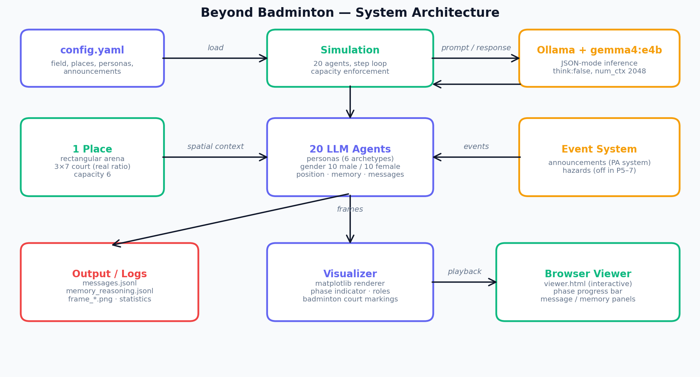
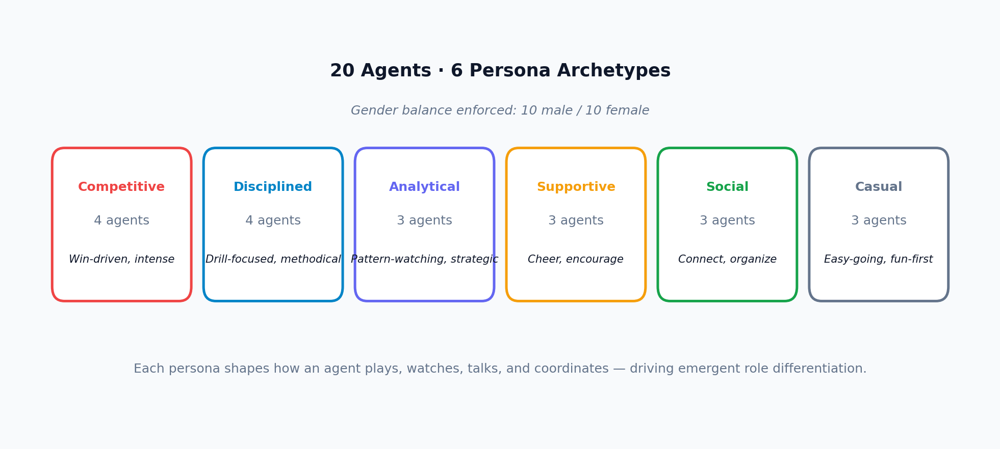
| 項目 | 値 |
|---|---|
| モデル | gemma4:e4b（Effective 4B params, "thinking" mode OFF） |
| 言語 | 英語（推論精度を優先） |
| エージェント数 | 20（男女 10:10） |
| フィールド | 14×14（屋内施設の壁） |
| コート / アリーナ | 3 × 7（実寸比 2.33:1、capacity 6） |
| 通信半径 | 4（同一場所 / 同一外部空間でのみ通信可） |
| 時間ステップ | 100（PA アナウンス：step 34, 67） |
本研究は 9 パターン の系統的実験を経て、最終的な発見へ到達した。 各パターンで 1 つの変数だけ を変えることで、 どの設計判断が創発に効くのかを切り分けた。
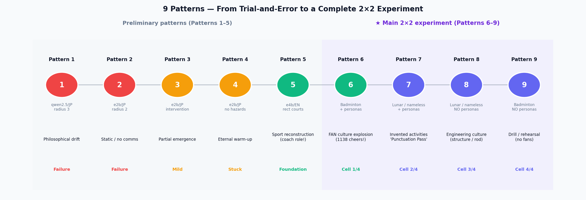
最初の 5 パターンは、本研究の メイン実験を成立させるための条件探索 だった。失敗パターン (1-4) は LLM の挙動の限界を可視化し、Pattern 5 で 「英語 + e4b モデル + 矩形コート」の組合せが創発を支える基盤となることが判明した。
| # | 設定 | 主な発見 | 判定 |
|---|---|---|---|
| 1 | qwen2.5/JP, radius 3, hazards | 哲学的議論への暴走（"我々は静寂の共鳴体である"） | 失敗 |
| 2 | e2b/JP, radius 2, hazards | 通信が届かず孤立、120 ステップ無音 | 失敗 |
| 3 | e2b/JP, intervention, hazards | ルール議論が出現するが部分的 | 部分的 |
| 4 | e2b/JP, no hazards, 1 room/2 courts | 「ウォームアップ」議論が無限ループ | 停滞 |
| 5 | e4b/EN, real rectangular courts | Agent 13 がコーチ役へ自発進化（基盤確立） | 成功 |
Pattern 5 で確立した基盤の上に、「ペルソナ（個性）の有無」「文脈の有無」 の 2 軸を独立に操作する 2×2 比較実験 を構築した。 この 4 パターン（P6/P7/P8/P9）が、本研究の中心的な解析対象である。
Patterns 6-9 を 2×2 マトリクスに配置すると、本実験の構造が一目瞭然となる：
2×2 比較実験の利点は、各要因の 単独の効果 と 組合せの効果 をすべて切り分けられることにある。これにより 「文脈を変えるだけで創発が起こる」「個性が決定的」といった仮説を 実験的に確かめられる。
失敗パターン (1-4) は、LLM の挙動の限界を理解する重要なデータとなった。 そこから導かれた Pattern 5 で 基盤条件 を確立し、Patterns 6-9 で 創造的文化が生まれるために必要な条件 を特定した。 全 9 パターンを通じて、本研究は単なる現象記述から原因究明へと深化した。
本研究のメイン実験（Patterns 6-9）に至る前に、5 つの予備パターンを通じて LLM 集団の挙動を観察し、創発を支える基盤条件を特定した。
最初の 4 パターンは、適切な実験条件を見出すまでの試行錯誤だった：
これらの失敗から、「英語プロンプト + e4b モデル + 適度な通信半径」 が創発の前提条件であることが判明した。
実寸比の矩形コート、英語プロンプト、e4b モデルへの切替により、 20 エージェントが初めて バドミントン的活動 を自発的に立ち上げた。 キーワード（match 567 / shuttle 480 / serve 451 等）が示すように、 LLM 集団がスポーツらしい振る舞いを生み出すための基盤が、ここで整った。
興味深い副次的観察として、Agent 13 という 1 体のエージェントが、 「召集役 → ドリル設計者 → パフォーマー → コーチ → ディレクター」へと 100 ステップの中で自発的に役割を進化させる現象も確認された。 個体レベルの役割形成は LLM 集団で自然に起こり得ることが示された。
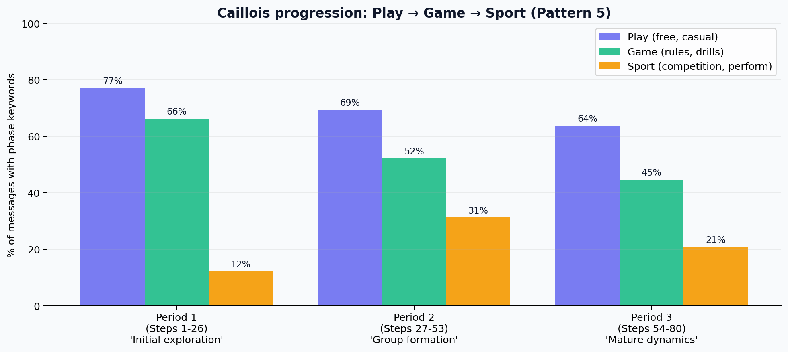
👇 ここから本研究のメイン実験（Patterns 6-9 の 2×2 比較）を順に解説する。
条件： バドミントン文脈（既知） × ペルソナあり
20 エージェントに 個別ペルソナ を付与し、 途中で 2 回の PA システムアナウンス を流した。 結果、応援・歓声文化が 爆発的に発生。
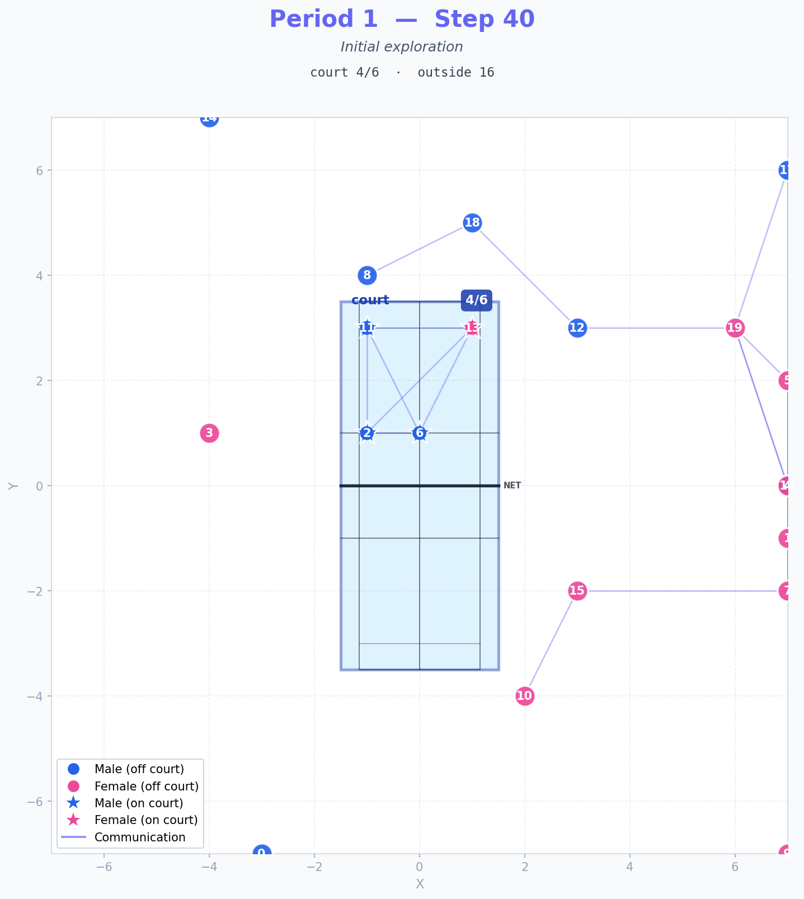
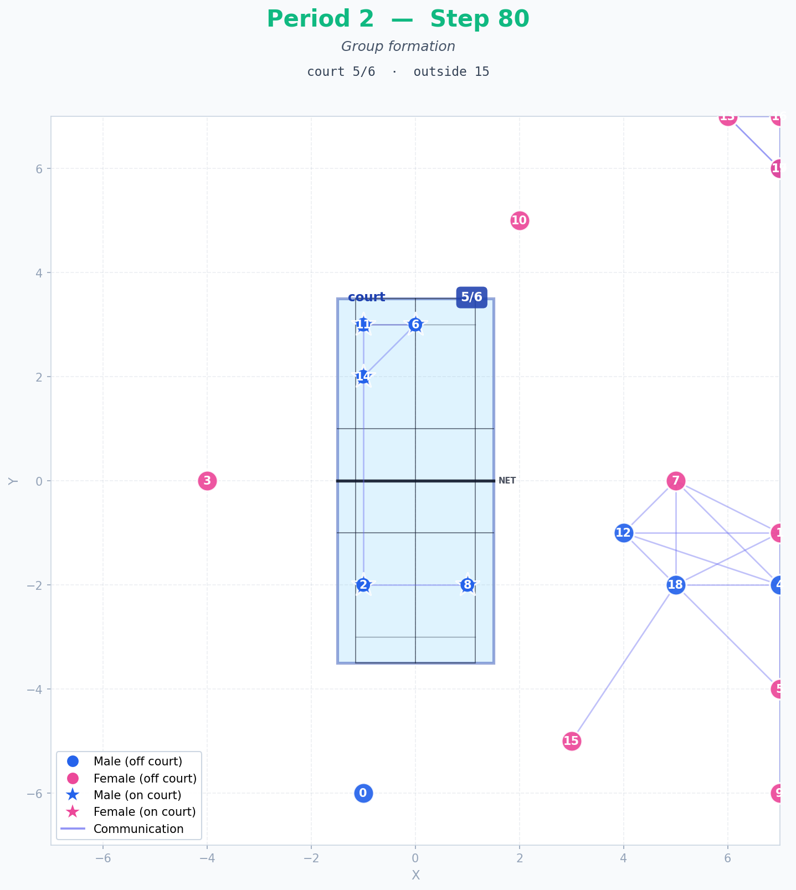
| カテゴリ | 数値 | 備考 |
|---|---|---|
| cheer（応援） | 1,138 | Pattern 5 では 1 件のみ |
| fan | 254 | 初の本格的「ファン」言及 |
| match（試合） | 1,062 | 2 倍に |
| game | 828 | 2.8 倍 |
| drill | 3,288 | 練習文化 |
| spectator | 28 | 初登場 |
キャパシティ制約 (capacity 6) と PA アナウンスの組合せで、 20 名中 14 名が必然的に 観戦・応援サイド に回り、ファン文化が育つ 構造的条件 が成立した。
個別ペルソナがあることで、20 名の異なる "声" が生まれ、群像劇が成立した。
条件： 月面・名前なき文脈（未知） × ペルソナあり
舞台を 月面ハビタット β に、エージェントを 人工生命体 に、 設備の名前を全て "long mesh-tipped objects"、"flying objects"、"vertical barrier" に置き換えた（バドミントン用語 court / racket / shuttle / net / doubles / singles を全削除）。
注意：Pattern 7 の物理環境について
本実験は 2D グリッド上の言語ベースのシミュレーション であり、 物理的な月面環境（低重力・真空・気密性など）は 再現していない。 「月面ハビタット」「人工生命体」という設定は、テキスト記述として 与えたのみで、 LLM がその文脈をどう解釈し、どんな振る舞いを生むかを観察した。
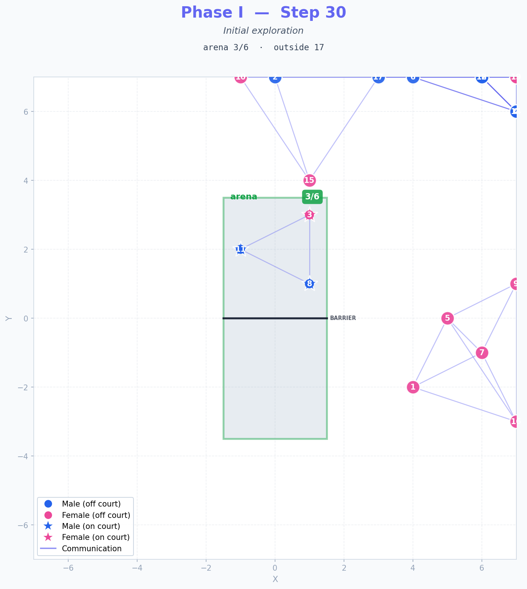
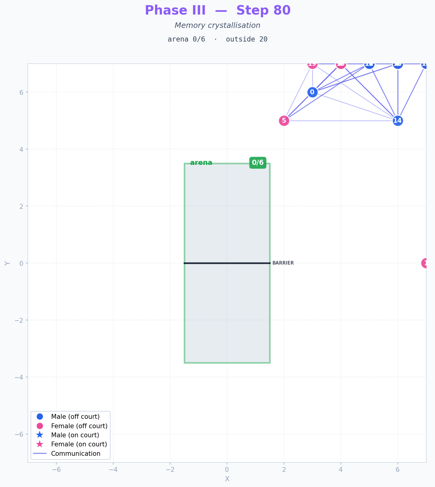
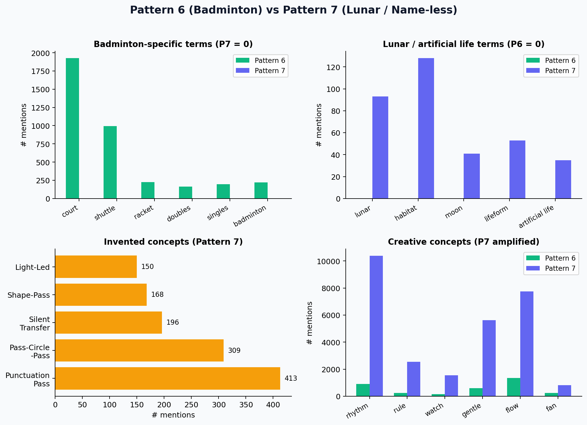
| 発明された概念 | 出現数 | 性質 |
|---|---|---|
| Punctuation Pass | 413 | 新しい動作 / ゲーム名 |
| Pass-Circle-Pass | 309 | 循環的なパスゲーム |
| Silent Transfer | 196 | 静かな受け渡し |
| Shape-Pass | 168 | 形を作るパス |
| Light-Led | 150 | 光によるリード |
| Language of movement | 16 | メタ認知:「動きの言語」 |
総メッセージ数：Pattern 6 = 5,442 / Pattern 7 = 19,183（3.5 倍）。 アリーナ自体は早期に空になっても、エージェント同士は外側で活発に議論し続け、 新しい動きの言語を共同設計した。
条件： 月面・名前なき文脈（未知） × ペルソナなし
Pattern 7 と 完全に同じ環境（月面・名前なき道具・PA アナウンス）で、 20 ペルソナを削除 した比較条件。世界・道具・刺激は同一、 変えたのはエージェントの 個性の有無 のみ。
| キーワード | P7（ペルソナあり） | P8（ペルソナなし） | 変化 |
|---|---|---|---|
| cheer（応援） | 357 | 0 | 消滅 |
| Punctuation Pass | 413 | 0 | 発明されない |
| Pass-Circle-Pass | 309 | 0 | 発明されない |
| Silent Transfer | 196 | 0 | 発明されない |
| language of movement | 16 | 0 | メタ認知も発生せず |
| rhythm（リズム文化） | 10,371 | 215 | 98% 減少 |
| キーワード | P7 | P8 | 性質 |
|---|---|---|---|
| structure（構造） | 12,160 | 14,229 | 建造的議論 |
| rod（棒） | 3,235 | 17,228 | 道具を「rod」と呼ぶ |
| pole（棒） | 15,184 | 0 | P7 とは違う命名 |
| framework | — | 1,826 | 新登場 |
| grid（格子） | — | 2,580 | 新登場 |
| lattice / scaffold | — | 少量 | 新登場 |
総メッセージ数：19,330 件（P7 とほぼ同じ）。 つまり 議論量は変わらないが、議論の質が一変した。 P8 のエージェントたちは 「測定」「構造」「最適化」 という工学言説に集中し、 Punctuation Pass のような 遊びの命名 は一切しなかった。
未知の文脈を与えても、ペルソナがないと「動きの言語」は発明されない。 代わりに、エージェントたちは 「環境を分析・測定・構造化する」 工学的探索モードに集合的に切り替わる。 これは "創造性" ではなく "技術者集団的なシステム理解" である。
条件： バドミントン文脈（既知） × ペルソナなし
Pattern 6 と 完全に同じ環境（バドミントンコート・PA アナウンス）で、 20 ペルソナを削除 した比較条件。これにより 2×2 設計の 最後のセルが埋まった。
| キーワード | P6（ペルソナあり） | P9（ペルソナなし） | 変化 |
|---|---|---|---|
| cheer（応援） | 1,138 | 0 | 消滅 |
| fan | 254 | 少量 | 大幅減少 |
| spectator | 28 | 少量 | 役割分化なし |
| match（試合） | 1,062 | 760 | 維持（既知文脈の効果） |
| drill（ドリル） | 3,288 | 4,231 | 4セル中最高 |
| shuttle | 993 | 498 | 道具認識は維持 |
| structure | 3,880 | 3,933 | 同等 |
P9 では、エージェントが 遊びそのもの ではなく 遊びの実行プロトコル を共同で組み立てる傾向が顕著に観察された：
つまり、P9 のエージェントは 「ステージング・スクリプト化」 に集合的に向かい、誰が応援するか ではなく 何を順番に実行するか を議論し続けた。応援文化は生まれず、代わりに「リハーサル文化」とも呼べる 反復・順序化の言説 が支配的となった。
既知の文脈（バドミントン）を与えても、ペルソナがないと ファン・観戦・応援といった社会的役割は発生しない。 代わりに、エージェントたちは 「演じる人」と「演じる人」だけ の集団となり、 演出構造（drill, sequence, handover）の最適化に集中する。
P6 / P7 / P8 / P9 の数値を並べることで、 「個性の有無」「文脈の有無」 の単独効果と組合せ効果が 定量的に切り分けられる。
| キーワード | P6 バド × ペルソナあり |
P7 月 × ペルソナあり |
P9 バド × ペルソナなし |
P8 月 × ペルソナなし |
|---|---|---|---|---|
| cheer（応援） | 1,138 | 357 | 0 | 0 |
| Punctuation Pass | 0 | 413 | 0 | 0 |
| rhythm（リズム） | 899 | 10,371 | 864 | 215 |
| match（試合） | 1,062 | 803 | 760 | 33 |
| drill（ドリル） | 3,288 | 964 | 4,231 | 0 |
| structure（構造） | 3,880 | 12,160 | 3,933 | 14,229 |
| shuttle | 993 | 0 | 498 | 0 |
| rod（棒） | 612 | 3,235 | 379 | 17,228 |
| 総メッセージ数 | 5,442 | 19,183 | 13,376 | 19,330 |
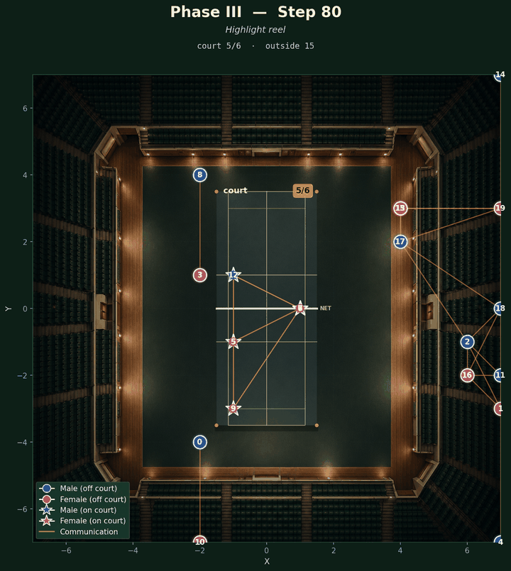
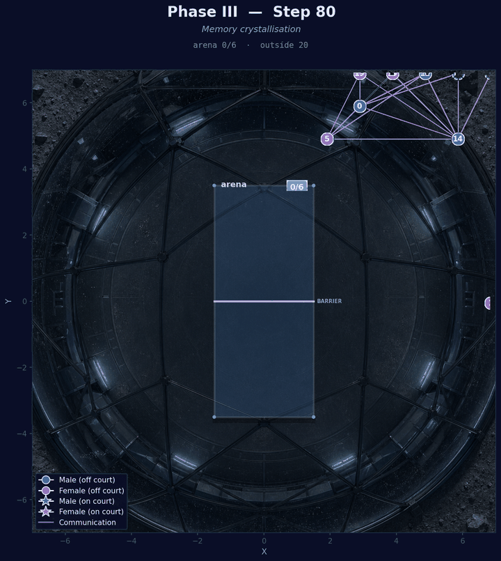
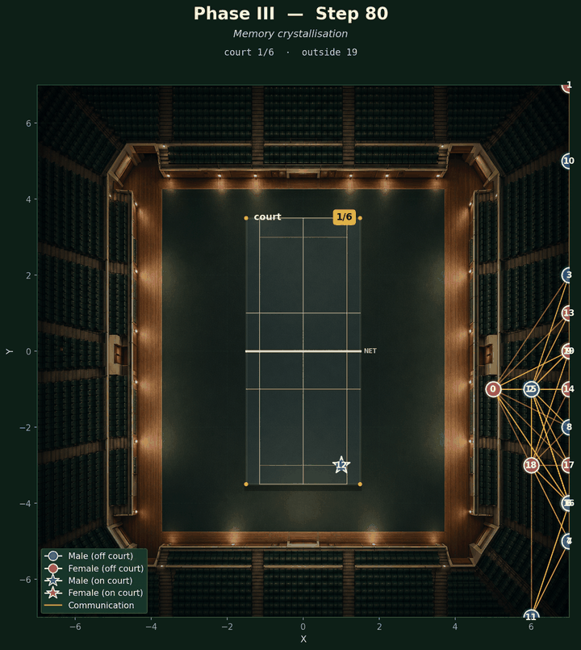
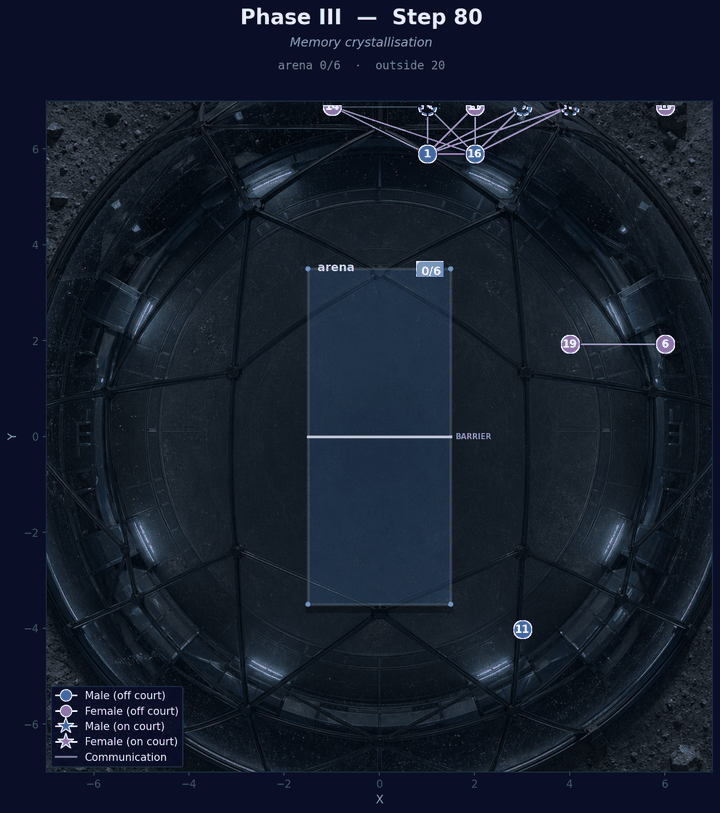
統合的命題： 「創造的文化は、社会的多様性（ペルソナ）と文脈刺激（既知 or 未知）の 組合せ から生まれる。 どちらか欠けると、AI 集団は別種の "構造化志向" へ分岐する。」
本研究の中心的な貢献は、LLM 集団における 創造的文化が生まれるための条件 を実験的に切り分けたことである。Pattern 6 のファン文化と Pattern 7 の「動きの言語」発明は、 いずれも 「個性 × 文脈」の組合せ から生じる現象であり、 どちらか単独では再現できない。
片方の要因だけでは創造性は生まれない。2 つの条件が同時にそろう ことで初めて、 新しい文化（応援・新言語）が立ち上がる。これは LLM 集団における 創造性の "二要素モデル" として整理できる。
| 条件 | 役割 | 欠けると |
|---|---|---|
| ペルソナの多様性 | 異なる "声" による役割分化、衝突、補完が生まれる | 同質的に「構造を作る」方向に進む（ドリル / 構造化） |
| 文脈刺激 | "何を題材にするか" の方向性を与える | 意味のない議論ループへ（Pattern 1-4 の失敗参照） |
| 物理制約 | コートの定員・通信範囲などが、役割の必然性を生む | 役割分化が起こらない |
P8/P9 の発見は、単なる "創造性の欠如" ではない。 むしろ 個性のない LLM 集団は積極的に "構造を作ること" に向かう ことが示された。これは LLM の事前学習に含まれる「教科書的・分析的な文章」の バイアスに由来する可能性が高い。
どちらも 専門家集団のような振る舞い であり、 個性の差から生まれる "感情・物語・応援" とは異質である。
本研究で観察された 「文脈の力」 は、 単純な「再構築 vs 発明」の対比よりも精緻な構造を持つ：
| 問い | 答え |
|---|---|
| 役割は自然発生するか？ | 条件付き YES — 個性の多様性と物理制約が揃えば自然に発生する。 どちらかが欠けると、役割分化は起こらない |
| スポーツは生まれるか？ | 条件付き YES — "スポーツ的活動" は文脈が、 "豊かな社会文化" は個性が決める。両方そろって初めて完成する |
| ファンは生まれるか？ | 個性 × 文脈の組合せが鍵 — 個性の多様性が最も決定的。物理制約と文脈刺激が補助的に働く |
Pattern 1〜4 の 「失敗」 は、本研究にとって不可欠な踏み台だった：
これらの失敗を経たからこそ、Pattern 5〜9 で 「何が創発を促し、何が阻害するか」 を切り分けられた。 本来の意味で、失敗は実験の燃料である。
本実験で特に重要な発見は、「ファン文化は、個性の多様性と環境設計の組合せで大きく変動する」 ことだった。Pattern 5（応援 1 件）から Pattern 6（応援 1,138 件）への劇的な差は、 個性の多様性 × 会場の定員制約 × イベント告知 の組合せから生まれている。
この知見は 現実社会のバドミントン界 にも応用できる可能性がある。 現実のバドミントンは観客の 95% が競技経験者と言われるほどファン層が薄い。 本実験のフレームワークを用いて、 「どの環境設計を変えれば、競技未経験者でも応援したくなるか」 の最適解を AI シミュレーションで先回りに探ることは、現実のスポーツ振興にも直接つながる。
本研究で行った 2×2 比較実験は、LLM 集団研究において 従来は稀な厳密さ を本研究に与えた。 単一の観察だけでは「創造的だ」「自然に生まれた」と記述できるに留まるが、 2×2 比較実験によって "なぜ" 生まれるのか に迫ることができる。 本実験のフレームワーク自体が、AI 集団研究の手法として再利用可能である。
全実験パターン（P1〜P9）の設定（YAML）、エージェント・コード、生成データは
GitHub リポジトリで 完全公開 されている。
config_pattern{6,7,8,9}.yaml を切り替えるだけで 2×2 比較実験を
そのまま再現できる。
本研究の基盤シミュレーション枠組みは、本ハッカソンの参加者向けに
兵頭龍樹氏から提供された LLM マルチエージェント 2D シミュレーション
プロジェクト（2d-multi-places-simulation-on-fire）
を出発点とし、本研究では以下を拡張した：ペルソナシステム（2×2 比較実験可能）、
矩形コート（実寸比対応）、PA システムによるアナウンス機能、
world_description によるシナリオ上書き、キャパシティ強制、
バドミントンコートマーキング描画、テーマ対応ビジュアライザ。
兵頭氏が共有してくださった基盤プロジェクトに深く感謝いたします。
LLM 実行環境としては、Ollama および Google DeepMind の Gemma 4 (e4b) モデルを使用した。